×
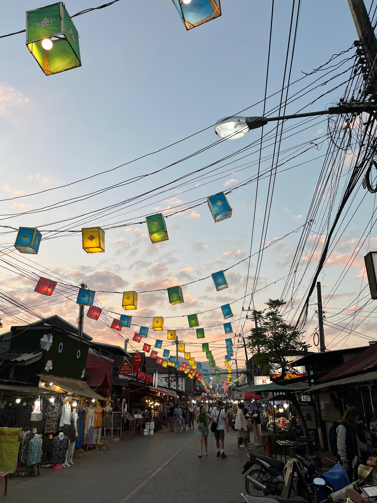
Pai: Tayland'ın Bohem Cenneti
Rahatlamak, doğayla iç içe olmak ve bohem bir kasabayı keşfetmek mi istiyorsunuz? Pai tam size göre!
Pai Seyahat Rehberi
Pai, Tayland’ın kuzeyinde, Chiang Mai eyaletine bağlı küçük bir kasabadır.
Dağları, vadileri, şelaleleri ve yemyeşil doğasıyla çevrili bu yer, herkese hitap eden inanılmaz
kendi halinde bir atmosfere sahip.
Biz buranın doğasına, yaşam tarzına ve rahat atmosferine aşık olduk resmen.
Eğer doğayı seviyorsanız, Pai’yi kesinlikle
beğeneceksiniz; çünkü harika manzaralarla dolu bu kasabada sadece bir motorsiklet kiralayıp etrafta
gezmek bile başlı başına bir deneyim. Şehirde herkesin oldukça rahat, salaş ve özgür bir hippi yaşam
tarzını benimsediğini fark ediyorsunuz; burası adeta zamanın yavaş aktığı bir yer.
Deniz yok ama Pai’nin enerjisi insanı hemen içine çekiyor. Kimi zaman kendi hallerinde reggae veya
jazz tarzında küçük
etkinlikler düzenleyen gençlerle, kimi zaman minicik çocuklarıyla dolaşan ailelerle, kimi zaman da
dünyayı gezen sırt çantalı gezginlerle aynı sokaklarda buluşuyorsunuz.
Sakinliğiyle ruhu dinlendiren, insanıyla iç ısıtan Pai, uzaklardan gelenleri bile kısa sürede evinde
hissettiren bir çekim gücüne sahip.
Para Birimi ve Fiyatlar
Tayland’ın resmi para birimi Baht (THB)’dir ve çoğu yerde nakit veya kredi
kartıyla
ödeme yapılabilir.
Bankamatiklerden kendi bankanızın kartıyla para çekmek de mümkün; fakat çektiğiniz miktara
bağlı olarak komisyon oranları artabilir. Bu nedenle yüksek miktarlar yerine, ihtiyacınız kadarını
çekmek hem güvenli hem de daha ekonomik olacaktır.
2025 itibarıyla ortalama kurlar yaklaşık olarak:
1 Tayland Baht ≈ 1,29 TL (yaklaşık değer)
1 USD ≈ 33-36 THB civarındadır.
Koh Lanta, Tayland’ın diğer turistik bölgelerine göre daha uygun fiyatlı bir
adadır;
burada yemekler, konaklama ve günlük harcamalar genellikle daha ekonomiktir. Özellikle plaj
kenarındaki restoranlar ve küçük kafelerde, hem lezzetli hem de hesaplı seçenekler bulmak oldukça
kolaydır.
Pai'ye Ne Zaman Gidilir?
Pai’yi ziyaret etmek için en ideal dönem Kasım-Şubat ayları arasıdır. Bu dönemde
hava gündüzleri
genellikle 24–26°C civarında olup oldukça keyiflidir, doğa yemyeşil ve yollar gezmeye uygundur.
Ancak akşamları sıcaklık belirgin şekilde düşüyor; biz Ocak ayında Pai’deydik ve
hava o kadar
serindi ki mont giymek gerekti.
Hatta kaldığımız yere ısıtıcı olup olmadığını sorduğumuzda aldığımız
cevap oldukça Tayland’a özgüydü: “Burası Tayland, burada ısıtıcı yok!”.
Dememiz o ki aman dikkat, Kasım–Şubat dönemi
“sıcak sezon” olarak geçse de, akşamları üşütmeyecek şekilde hazırlıklı gelmekte fayda var.
Pai'de Yeme - İçme
Küçük bir kasaba olmasına rağmen Pai, yeme-içme konusunda oldukça zengin bir atmosfere sahip. Tayland
mutfağının otantik lezzetlerini tadabileceğiniz gibi, dünyanın dört bir yanından gelen gezginlerin
etkisiyle oluşmuş uluslararası tatları da burada bulabilirsiniz.
Akşamları kurulan Walking Street
(Pai Night Market), sokak lezzetlerini denemek için en ideal yer; burada Pad
Thai, mango sticky
rice, taze meyve suları, krep ve daha pek çok atıştırmalık sizi bekliyor.
Kasabanın her köşesinde
yer alan şirin kafelerde dağ manzarasına karşı kahveler yudumlanmalı ve Tayland’ın kuzeyine özgü
Khao Soi mutlaka denenmelidir.
Ayrıca Pai, Tayland’da gördüğümüz en geniş vegan ve vejetaryen seçeneklerine sahip
yerlerden
biriydi; organik ürünlerle hazırlanan yemekler, smoothie bowl’lar ve taze salatalar neredeyse her
menüde yer alıyor.
Yerel halkın sıcaklığı, uygun fiyatlar ve doğanın içindeki o huzurlu ortam birleşince, Pai’de yemek
yemek bizim için sadece karnımızı doyurmak değil, gerçekten keyif aldığımız bir deneyim oldu.
Pai'ye Ulaşım
Pai, kuzey Tayland’da, Chiang Mai’ye yaklaşık 130 km uzaklıkta küçük ama çok sevimli bir kasaba.
Dağlık bir bölgede olduğu için ulaşım seçenekleri sınırlı, ama manzaralar öyle güzel ki yol boyunca
gözleriniz doymuyor. Biz Chiang Mai’den minibüsle geldik; yol yaklaşık 3–4 saat sürdü ve oldukça
virajlı dağ
yolları biraz heyecanlıydı. Koltuklar rahat ve fiyatlar da uygundu.
Ayrıca Pai, Mae Hong Son Loop rotasında bir durak olarak da bilinir; bu da
kasabayı, çevre kasabaları ve dağlık manzaraları keşfetmek isteyen gezginler için inanılmaz güzel
bir deneyimdir.
Ama unutmayın; Dağlık ve virajlı bir rota, manzaralar muhteşem fakat sürüşte
dikkatli olmakta fayda var!!!
Pai'de Nerede Kalınır?
Pai küçük ama konaklama seçenekleri açısından oldukça zengin bir kasaba. Burada ister doğayla iç içe,
bambu bungalovlarda ve nehir kenarı pansiyonlarda huzurlu bir tatil geçirebilir, ister kasaba
merkezine yakın butik otellerde daha modern ve rahat bir konaklama tercih edebilirsiniz.
Daha
lüks
bir deneyim isteyenler için özel havuzlu villalar ve eco-lodge’lar da mevcut; dağ veya orman
manzaralı bu yerler romantik bir kaçamak veya sakin bir tatil için ideal.
Bizim tavsiyemiz, huzurlu bir ortam istiyorsanız kasaba merkezinden biraz
uzaklaşmanız; böylece çok daha sakin ve keyifli bir deneyim yaşayabilirsiniz.
Dikkat etmeniz gereken nokta, Pai küçük bir kasaba olduğundan, rezervasyon yapmak
özellikle yüksek sezonda (Kasım–Şubat) önemlidir.
Seyahatinizi Planlayın(Kullanışlı Bağlantılar)
Seyahatlerimizi planlarken kullandığımız araçlara göz atın.
Burada yer alan bağlantılar bağlı kuruluş (affiliate) linkleridir.
Bu linkleri kullanarak blogumuzu sürdürmemize yardımcı oluyorsunuz.
Sizin için herhangi bir ek maliyet oluşturmaz, ancak bizim misyonumuzda büyük fark yaratabilir.
🌿
🏨Size en uygun oteli bulun. Rezervasyonlarınızı Booking.com üzerinden yapabilirsiniz.
✈️En uygun uçuş fiyatlarını Skyscanner.com adresinden bulabilirsiniz.
🎟️Çevrim içi tur ve etkinlik rezervasyonları için GetYourGuide.com kullanın.
🏕️Yürüyüş, kamp, bisiklet ve daha fazlası için Decathlon.com geniş bir yelpaze sunuyor.
Pai Gezi Haritası
Pai’de dolaşmak zaten başlı başına bir keyif ama küçük bir rehber hayatı kolaylaştırıyor. Haritamızda en sevdiğimiz durakları bulabilir, kendi Pai rotanızı oluşturabilirsiniz.
1 Pai Kanyon
2 Pai Bamboo Bridge
3 Wat Phra That Mae Yen
4 Tham Lod Mağarası
5 Sai Ngam Kaplıcası
6 Pai Gece Pazarı
7 Paradise Bar
8 Jazz House Pai
9 Monko Cafe
10 Dream Cafe Pai
11 Cade De Pai
12 Baan Mai Kon Muang Pai Resort
Wat Phra That Mae Yen'e Tırmanın

Pai’ye geldiğinizde mutlaka uğramanız gereken yerlerden biri Wat Phra That Mae
Yen. Kasabanın biraz dışında, tepenin üzerinde yer alan bu tapınak, çevresindeki
vadilerin ve Pai kasabasının muhteşem panoramik manzaralarını sahip.
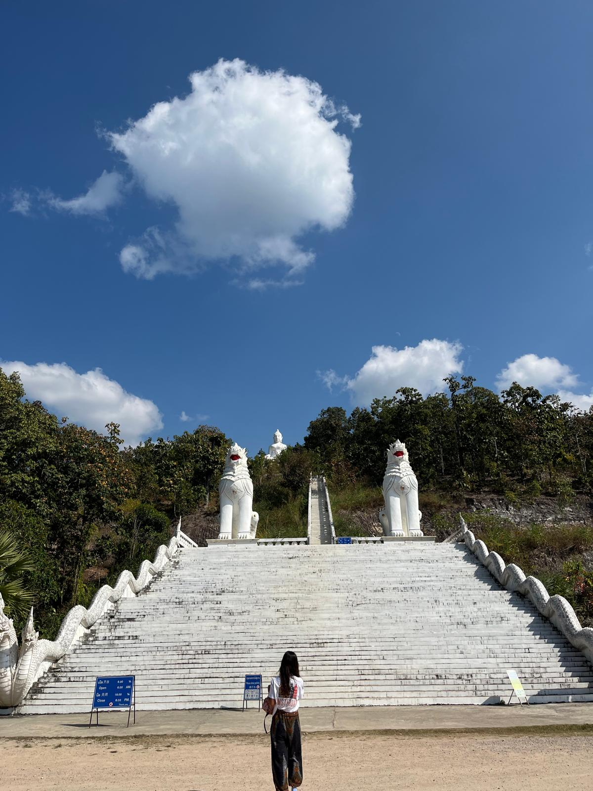
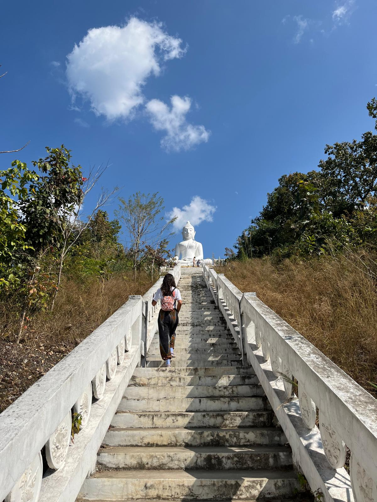
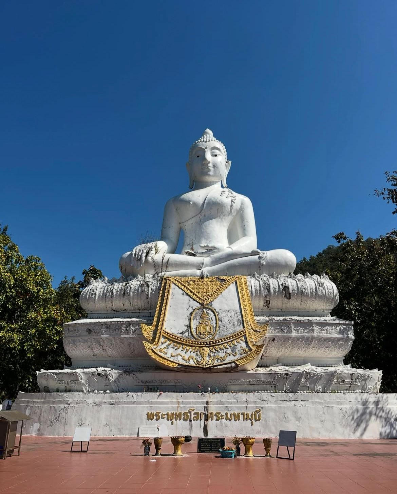
Heykele ulaşmak için yaklaşık 300 basamaklık merdiveni tırmanmanız gerekiyor; kısa
ama biraz efor
gerektiren bu yolculuk, tepede sizi karşılayan manzara için kesinlikle değer. Gün batımında burası
Pai Kanyonu’na kıyasla çok daha sakin, daha az kalabalık bir nokta; bizce gün batımını izlemek için
ideal bir yer.
Beyaz Buda, kasabanın birçok noktasından görülebiliyor ve tapınak, yerel halk tarafından hala aktif
bir
ibadet alanı olarak kullanılıyor; bu yüzden ziyaret sırasında sessiz ve saygılı olmanız
önemli.
Wat Phra That Mae Yen, 06.00–18.00 saatleri arasında ziyarete açıktır.
Gün batımını
izlemek için genellikle 17.00–17.30 civarında gitmek iyi bir plan olur.
Tham Lod Mağarasını Keşfedin
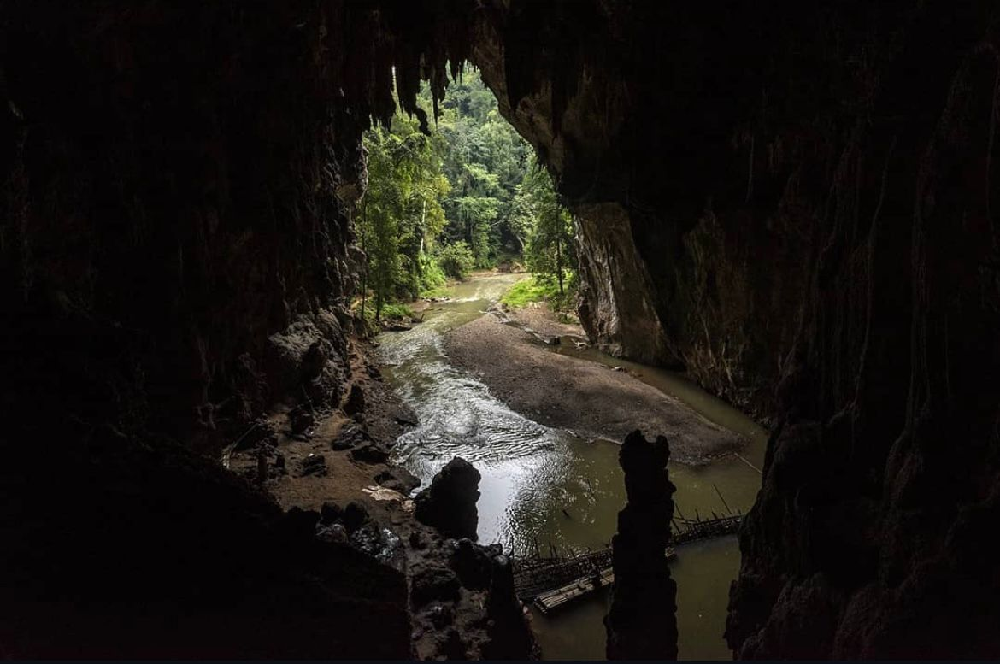 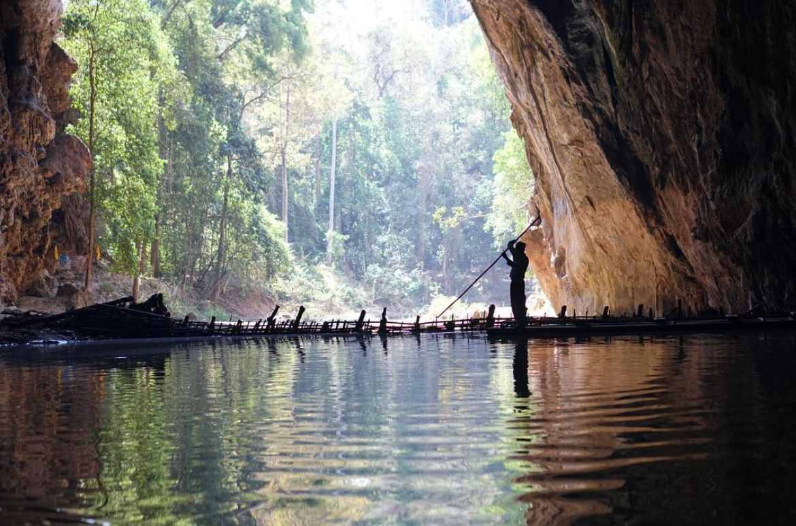Pai’ye yaklaşık 80 km uzaklıkta yer alan Tham Lod Mağarası, içinden bir nehir geçen yaklaşık 1,6 km uzunluğunda etkileyici bir mağara sistemidir. Bu mağaralar, tarih öncesi dönemde bölgede yaşayan insanlar için mezarlık olarak kullanılmıştır, bu nedenle hem doğal hem de kültürel açıdan büyük bir öneme sahip.
 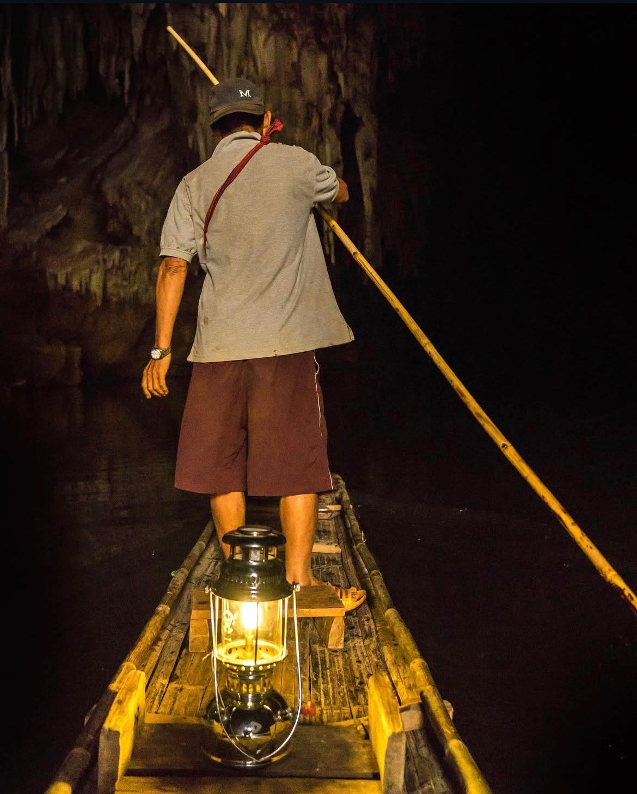
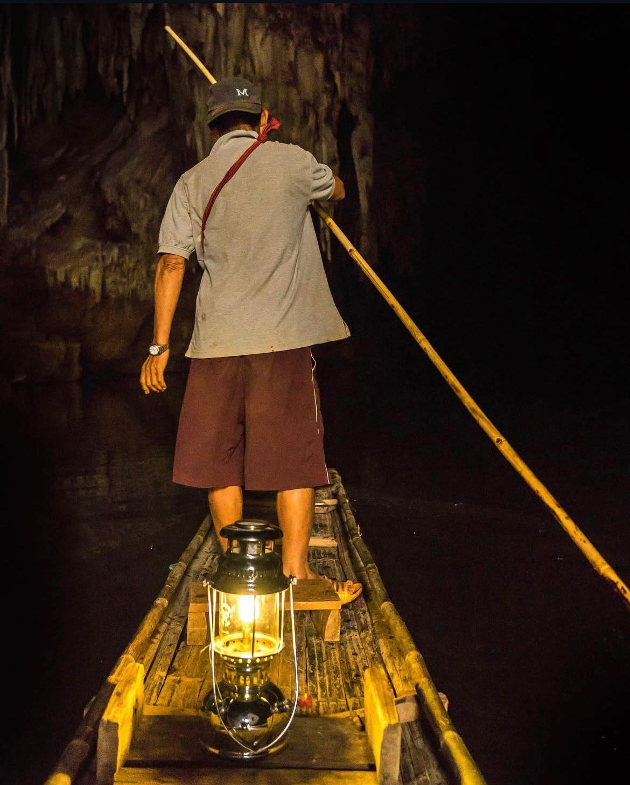
Tham Lod’da toplamda üç farklı mağarayı keşfedebilirsiniz: Fotoğraflarda sıkça görülen Sao
Hin Mağarası,
Tuk Ta Mağarası ve ulaşım için sal gerektiren Pi Man Mağarası.
Ücretler ziyaret etmeyi planladığınız
mağara sayısına göre değişiyor; Sao Hin için üç kişilik gruplarda 300 THB, iki mağara için +50 THB,
350 THB,
üç mağara için ise 600 THB ödüyorsunuz.
Ancak turların ücretleri ve kaç mağaranın gezilebildiği, mevsime, su seviyesine ve bakım durumuna
bağlı olarak değişebiliyor. Özellikle yağmur sezonunda ya da su seviyesi yükseldiğinde, tüm
mağaralar açık olmayabiliyor; bazı dönemlerde sadece bir veya iki mağarayı gezmek mümkün
olabiliyor.
Bizim gittiğimiz dönemde yalnızca ilk mağarayı gezebildik; yağmur ve sal tamiri nedeniyle diğer
mağaralar ziyarete kapalıydı. Bu yüzden gitmeden önce bu ayrıntılara dikkat
etmenizde kesinlikle fayda var.
Bu gezilerde size mağaradaki tüm alanları gezdirecek ve tarihi anlatacak yerel bir rehber eşlik
ediyor. Rehbersiz giriş yasak! Mağara içindeki yürüyüş yolları ve bambu iskeleler sayesinde hem
güvenli hem de keyifli bir keşif yapabiliyorsunuz. Mutlaka burayı görün, büyülenmemek imkansız.
Sai Ngam Kaplıcası'nda Rahatlayın
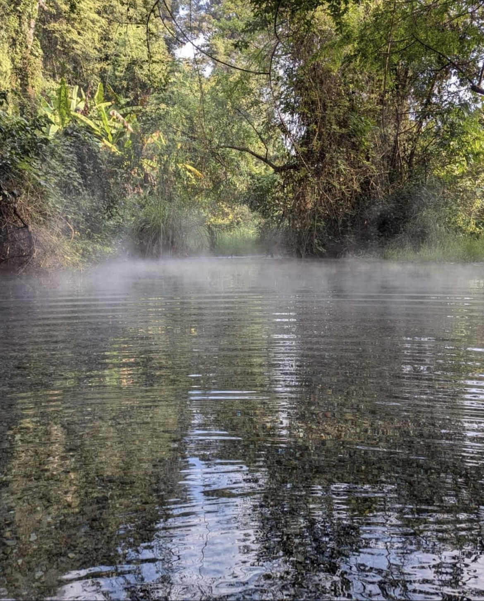
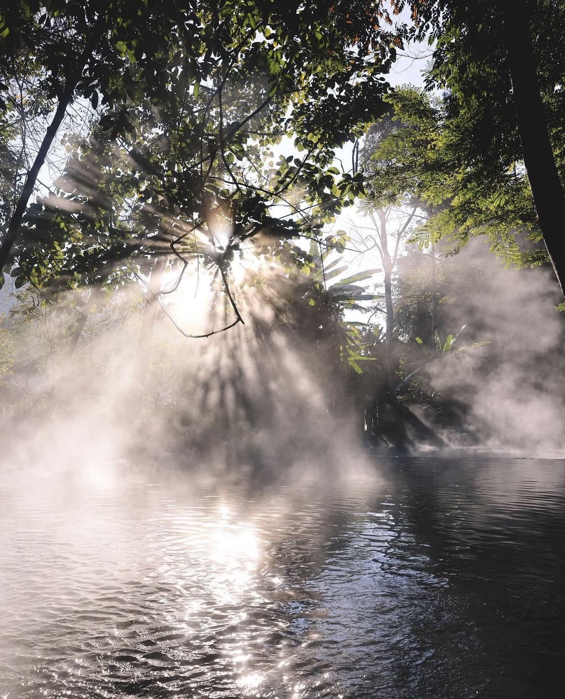
Sai Ngam Kaplıcası, Pai merkezine yaklaşık 30 dakikalık mesafede, doğanın tam ortasında yer alan huzurlu bir kaçış noktası. Eğer sıcak suda yüzebileceğiniz rahatlatıcı bir yer arıyorsanız, burası tam size göre. Yakındaki doğal kaynaklardan gelen termal sular, küçük bir şelale şeklinde havuza akıyor ve ortaya doğal bir spa ortamı çıkıyor. Suyu ılık olduğu için, dışarısı serin olsa bile yüzmek harika bir yer.
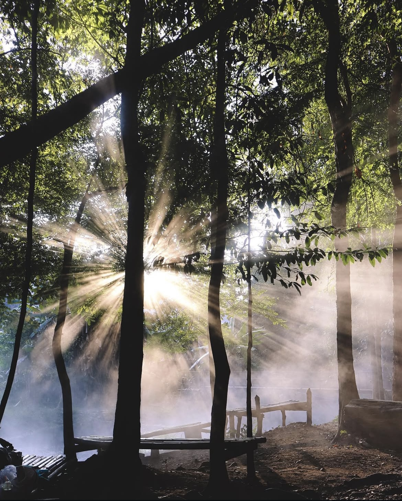
Etrafı gölgelik ağaçlarla çevrili bu kaplıcada doğayla iç içe, sessiz bir atmosferde dinlenmek
gerçekten harika bir deneyim.
Kaplıca alanında oturma yerleri, soyunma kabinleri ve basit tesisler de bulunuyor.
Sai Ngam Kaplıcası, bir milli parkın sınırları içinde yer aldığı için girişte küçük bir ücret
alınıyor: yabancılar için 200 THB, Tayland vatandaşları için 50 THB, ayrıca motosiklet parkı
için 30 THB ödeniyor.
09.00–18.00 saatleri arasında açık olan bu kaplıcaya sabahın erken saatlerinde gitmenizi kesinlikle tavsiye ederiz, çünkü bir saatten sonra çok fazla tur geliyor ve ortam oldukça kalabalıklaşabiliyor. Erken giderseniz hem sessizliğin tadını çıkarabilir hem de doğayla baş başa, sıcacık sularda yüzmenin keyfini doyasıya yaşayabilirsiniz.
Pai Kanyon'da Gün Batımını İzleyin
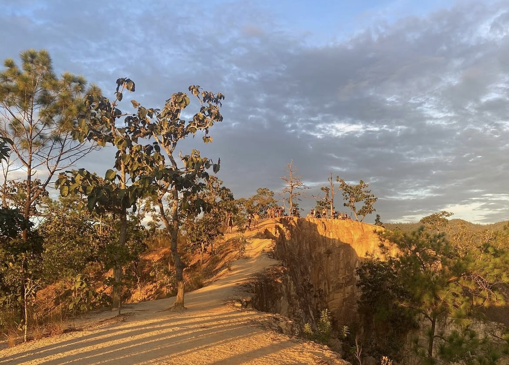 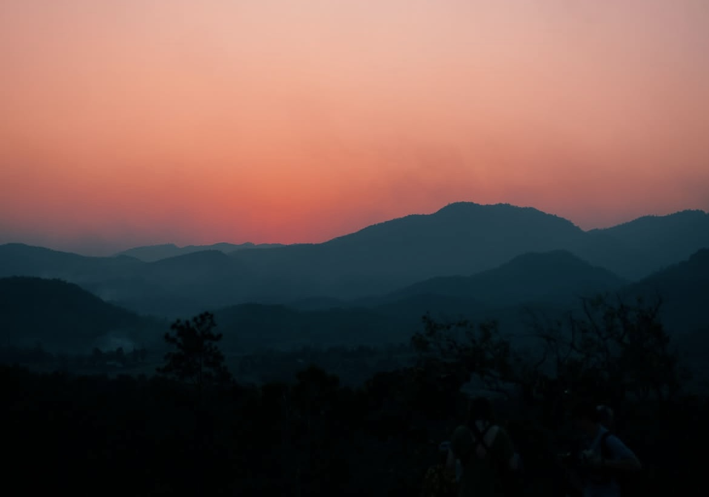Pai’de gün batımını izlemek için en popüler yerlerden biri kesinlikle Pai Kanyonu. Kasabanın merkezine yaklaşık 10-15 dakikalık uzaklıkta yer alan bu doğal oluşum, kızıl toprakları ve vadilere uzanan manzarasıyla harika bir gün batımına tanıklık ediyor. Fakat çok kalabalık olabiliyor.
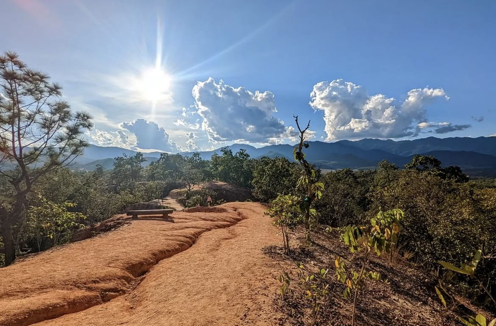 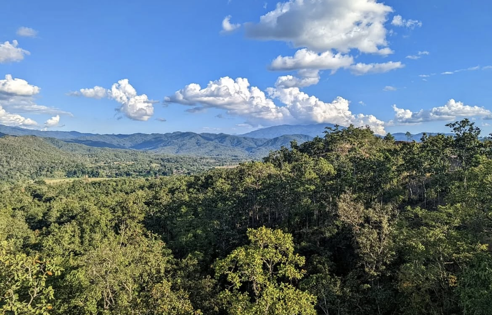Eğer
sessizliği ve sakinliği tercih ediyorsanız, günün erken saatlerinde gitmek hem daha huzurlu hem de
bambaşka
bir atmosferde manzaranın tadını çıkarmak için harika bir alternatif.
Ama bizden tavsiye, burayı bir kez hem
sabahın erken saatlerinde hem de gün batımında mutlaka deneyimlemeniz.
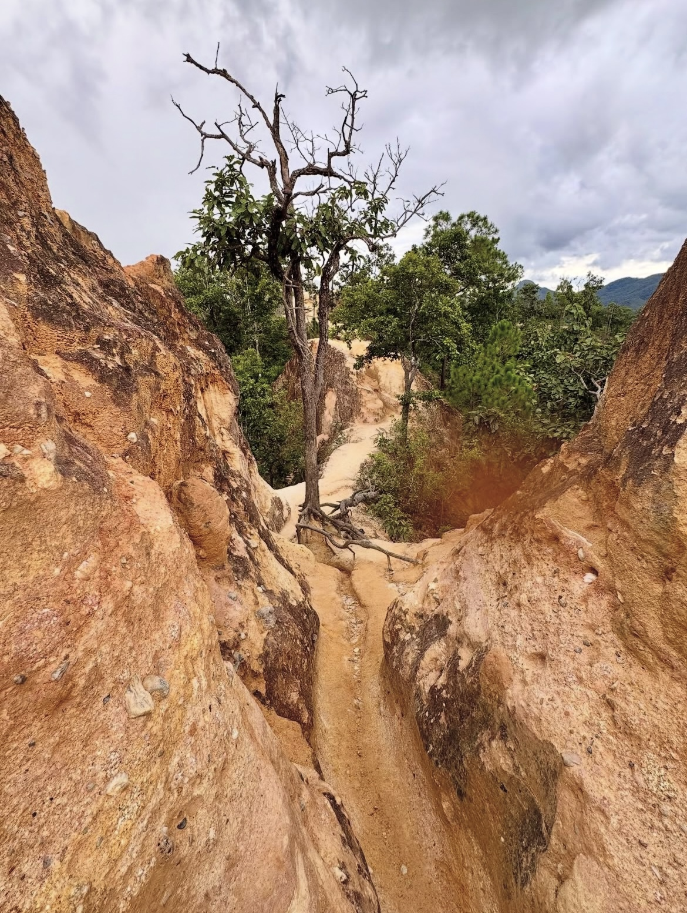
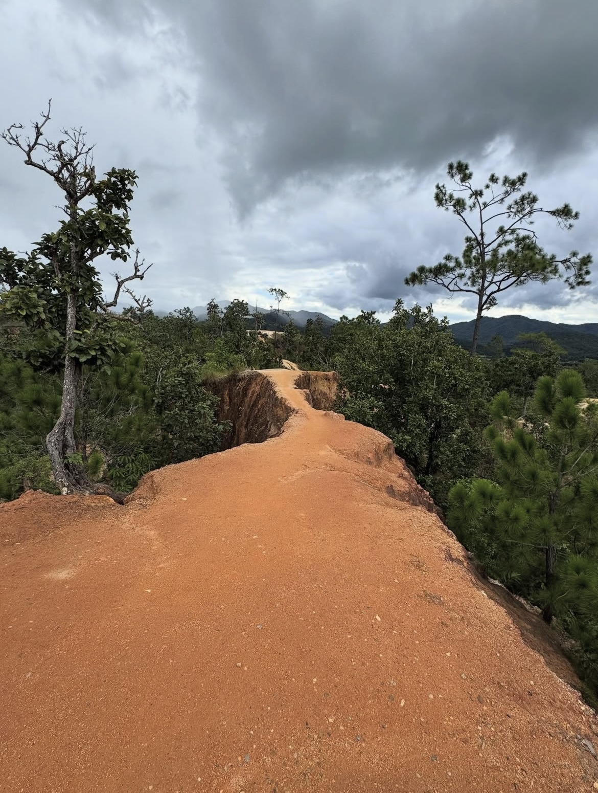
Kanyonun dar patikalarında yürüyüş yapmak oldukça keyifli olsa da, yüzeyi düz olmayan, küçük çakıllarla kaplı ve inişli çıkışlı yolları nedeniyle dikkatli olmanız gerekiyor. Burada denge her şey!
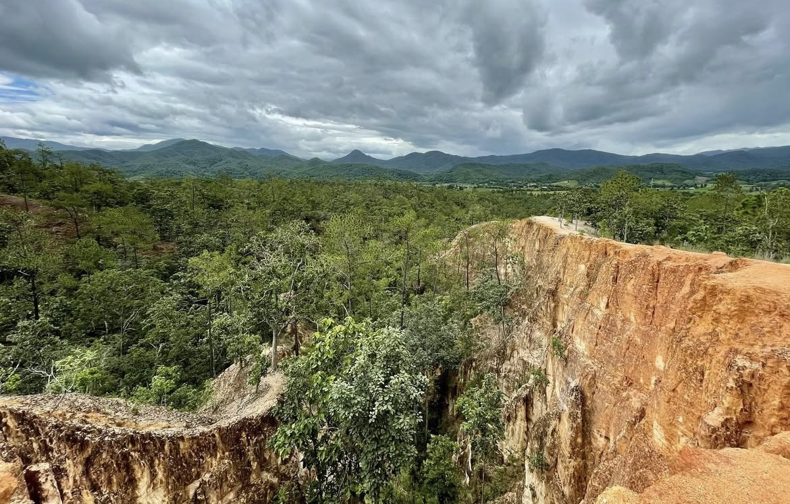 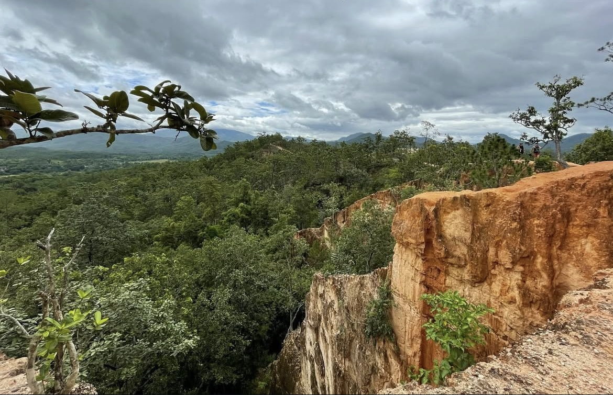Bazı bölümler gerçekten dik ve dar olsa da, kanyonda manzaranın keyfini çıkarabileceğiniz geniş ve
kolay yürüyüş alanları
da var; yani herkes kendine uygun bir rota bulabiliyor.
Pai Kanyonu 24 saat açık ve giriş tamamen
ücretsiz.
Kanyonun hemen girişinde küçük bir pazar alanı var; buradan su ya da atıştırmalık
alabilir, aracınızı park edebilirsiniz. Girişten sonra sadece 5 dakikalık kısa bir yürüyüşle
kanyonun zirvesine ulaşın ve manzaranın güzelliğine kendinizi bırakın.
Küçük bir uyarı: Gün batımı izlemek şahane ama dönüşte hava bir
anda kararıyor, o yüzden el feneri ya da telefon ışığı almayı unutmayın!
(Pai Bamboo Bridge)Bambu Köprüsü'nde Yürüyün
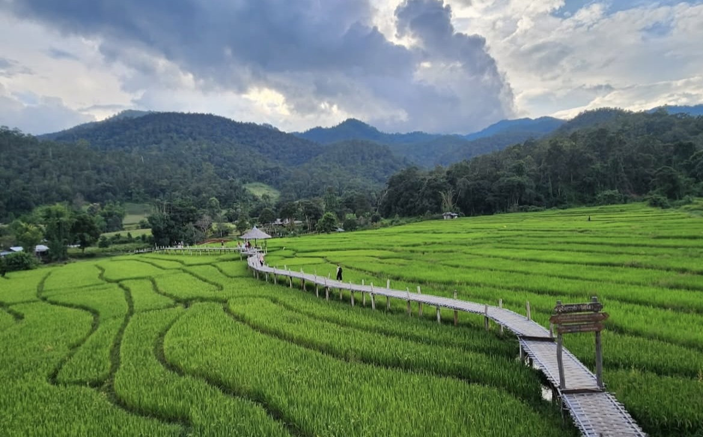Pai Bambu Köprüsü, pirinç tarlaları ve dağların ortasında uzanan, tamamen bambudan yapılmış yaklaşık 800 metre uzunluğunda bir köprü. Pai merkezine yaklaşık 11 km uzaklıkta yer alıyor ve buraya motorla kolayca ulaşabilirsiniz; ancak dikkat edin, yolun son kısımları biraz bozuk ve taşlı, bu yüzden günün ilerleyen saatlerinde gitmeyi düşünüyorsanız karanlığa kalmamaya özen gösterin.
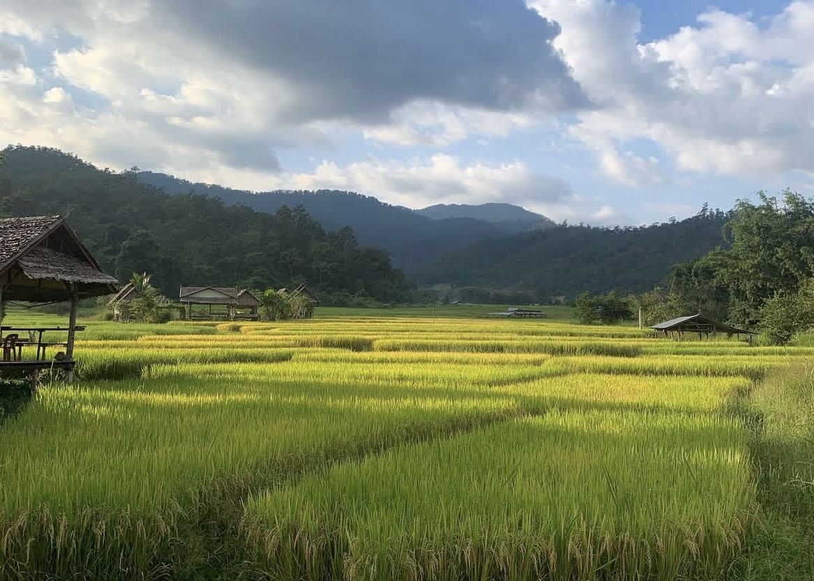Köprü, aslında yerel halkın tarlalarına ulaşmasını kolaylaştırmak ve yakındaki Wat Phaem Klang Tapınağı’na gidebilmek için yapılmış.
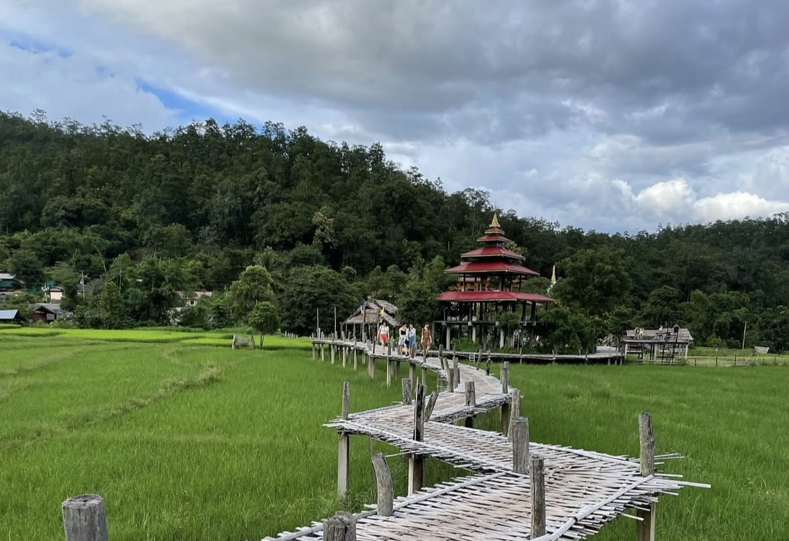Köprü boyunca yürüyebilir ya da sadece çevredeki yeşil tarlalara ve dağ
manzarasına hayranlıkla bakabilirsiniz. Köprünün sonundaki tapınağı ziyaret edebilir veya birkaç
yerde olan yerel bir kafede kahvenizi yudumlayarak bu huzurlu
atmosferin
tadını çıkarabilirsiniz.
Giriş, kişi başı 30 THB'dir.
Pai Gece Pazarı'nda Gezinin
Arkadaşlar, bu gece pazarlarından bahsetmeyi gerçekten çok seviyoruz çünkü hepsi birbirinden güzel! Tayland’da nerede olursanız olun, ya haftasonları ya da haftanın belirli günlerinde mutlaka bir gece pazarı kuruluyor. Hatta bizim gittiğimiz tüm gece pazarlarını topluca paylaştığımız bir yazımız da var, ona da göz atabilirsiniz.
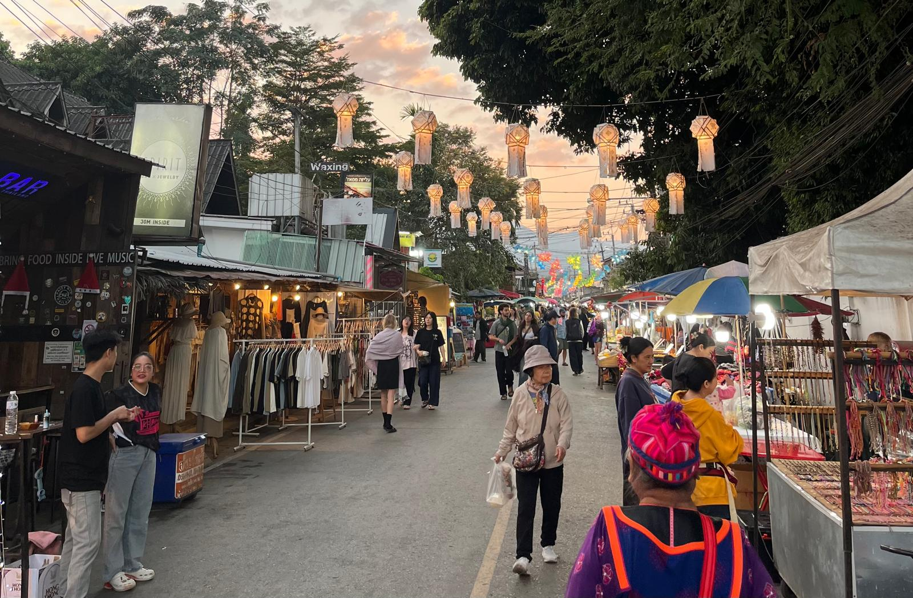Pai Gece Pazarı’na gelince… Burası gerçekten harika! Haftanın her günü kuruluyor ve
yemek, alışveriş,
müzik, kalabalık ve o cıvıl cıvıl atmosfer bir araya geliyor. Zaten Pai’nin bohem havasından ve
herkesin rahatlığından bahsetmiştik; işte burada o enerjiyi çok daha yoğun hissediyorsunuz. Her
tezgahtan bir şeyler almak istiyorsunuz çünkü her şey ya çok lezzetli ya da çok sevimli. Üstelik
fiyatlar da oldukça uygun!
Akşam saatlerinde sokakta müzik yapan sanatçılar, dans eden gençler ve o rahatlatıcı
atmosferle birlikte Pai Gece Pazarı sadece bir alışveriş noktası değil, aynı zamanda kasabanın
sosyal ruhunu birebir hissedebileceğiniz keyifli bir yer kesinlikle.
Özellikle tapınağın yanındaki sokakta yer alan Khao Soi tezgahlarından birinde mutlaka Khao
Soi
yemenizi tavsiye ederiz; vegan seçenekleri de mevcut. Masalar ortak kullanıldığı için anında yeni
insanlarla tanışıp sohbet etmeye başlıyorsunuz. Ayrıca Shampoo Potato’yu da
denemeyi unutmayın.
Bizim kumpire benziyor ama lezzeti bambaşka!
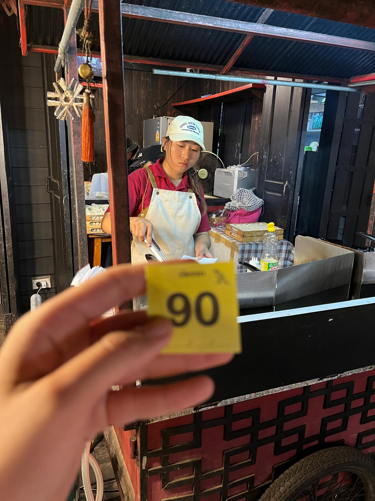
Kısacası, 18.00–22.00 saatleri arasında kurulan bu pazarda her şeyi deneyin, her köşesinde ayrı bir
güzellik var. Gerçekten söylüyoruz: Hiç pişman olmayacaksınız!
Ufak bir hatırlatma; özellikle yemek tezgâhlarında çoğunlukla sadece nakit para
geçerli, bu yüzden akşam pazara gelirken
yanınıza bir miktar nakit almayı unutmayın.
Pai'de Alışveriş
Pai’de alışveriş, Tayland’ın hiçbir yerinde olmadığı kadar keyifli ve uygun fiyatlı
diyebiliriz.
Küçük bir kasaba olmasına rağmen, her köşesinde el yapımı takılar, bohem kıyafetler, doğal
sabunlar,
bambu aksesuarlar ve rengarenk tasarımlarla dolu tezgahlar bulabiliyorsunuz. Ve
fiyatlar uygun
olmasına rağmen pazarlığa da açıklar.
Bizim tarzımıza da çok uygun olduğu için en çok alışverişi biz burada, Pai’de yaptık. Her köşe
başında “şunu da alayım, bunu da deneyeyim” diyerek kendimizi tutamadık. Dikkat edin, siz de çok
kaptırabilirsiniz… ya da bırakın kaptırın, çünkü Pai’de alışveriş gerçekten ayrı bir keyif!
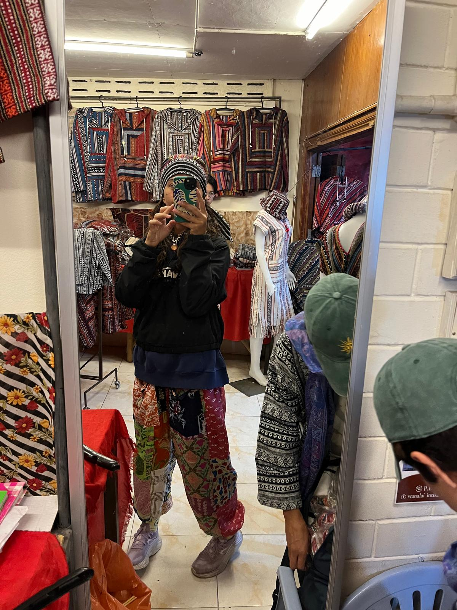
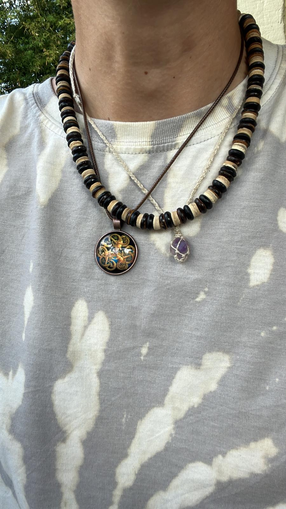
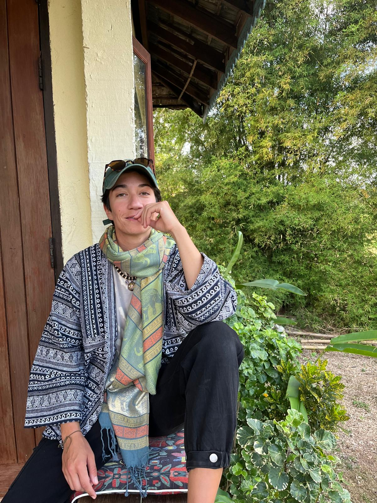
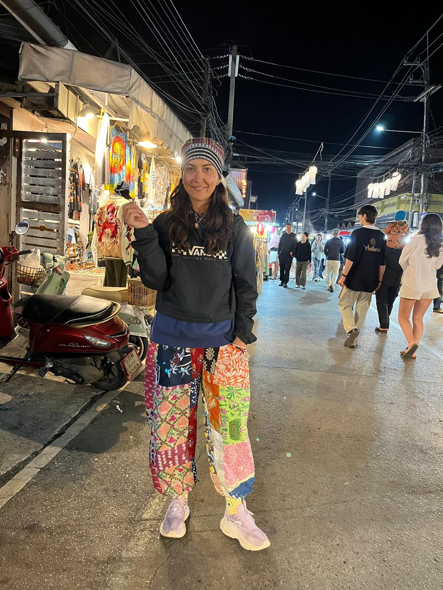
Pai'de Gece Hayatı
1. Paradise Bar, Pai
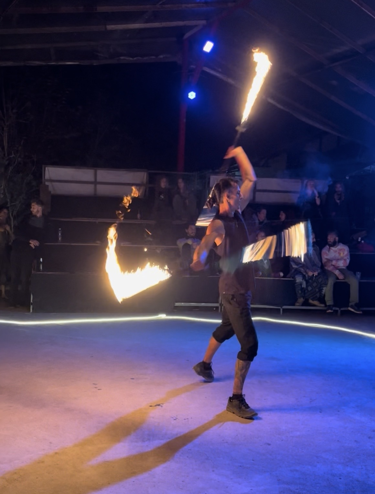Pai’de gece hayatını deneyimlemek istiyorsanız, Paradise Bar kesinlikle uğramanız gereken yerlerden biri. Burası, Pai’nin o rahat, özgür ve biraz da çılgın enerjisini en güzel şekilde yansıtan yerlerden. Rengarenk ışıkları, canlı müzikleri ve sıcakkanlı insanlarıyla resmen bir festival havası var. Özellikle ateş şovlarıyla ünlü olan Paradise Bar’da, haftanın belirli günlerinde yapılan gösteriler gerçekten harika.
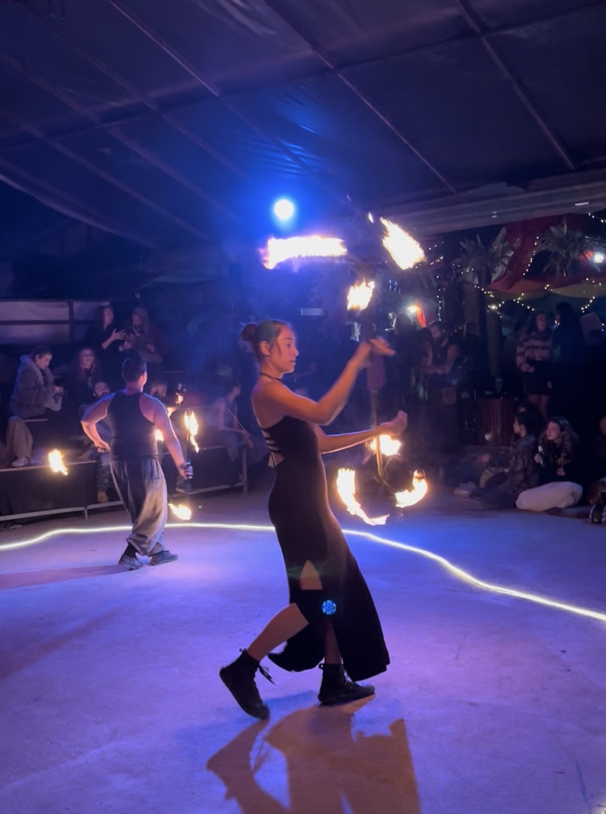Ateş şovları başlamadan önce alana giderseniz, insanlarla tanışıp ateşsiz bir şekilde çubuk çevirme pratiği yapabiliyorsunuz. Herkes o kadar hevesli ve enerjik ki, kısa sürede ortama karışıp bir iki numara öğrenmeden ayrılmak neredeyse imkansız.

Burada sadece ateş şovlarını izlemekle kalmıyor, aynı zamanda açık mikrofon
geceleri, jonglör
performansları gibi etkinliklerle Pai’nin özgür ve sanatsal enerjisini birebir
hissediyorsunuz. Bu etkinliklere çok küçük miktarlarda giriş ücreti ödeyebiliyorsunuz kimi günlerde.
Pai’de meşhur bir sirk okulu var, biz oraya gidemesek de Paradise Bar bizim için
kesinlikle harika bir
deneyim oldu. Eğer Pai’de birkaç akşam geçirecekseniz, bu barın enerjisini mutlaka yaşayın. Çünkü
burası sadece bir eğlence mekanı değil, aynı zamanda Pai’nin ruhunu en iyi hissedebileceğiniz
yerlerden
biri.
2. Jazz House Pai
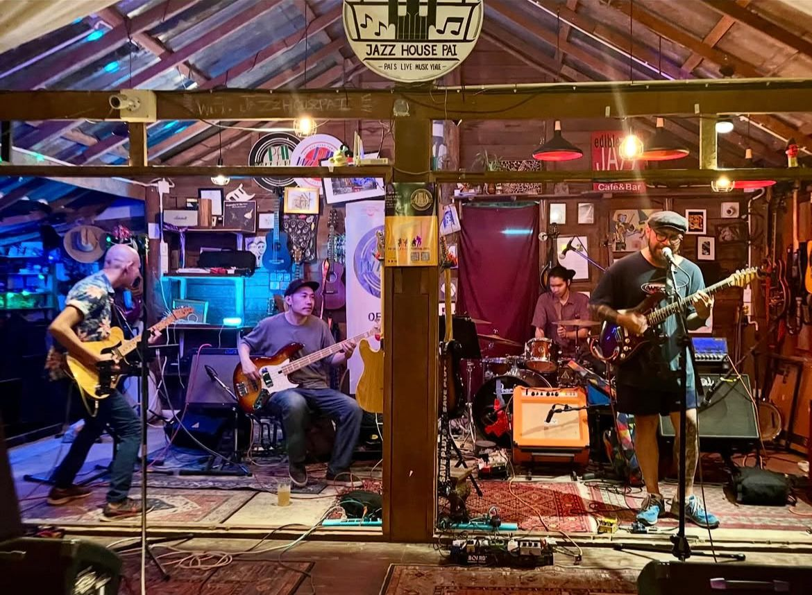Pai’deki Jazz House, müzikle ruhunuzu dinlendirebileceğiniz ama aynı zamanda
enerjinizi de
yükseltebileceğiniz harika bir mekan. Sanki localar şeklinde küçük alanlar oluşturulmuş ve bu
alanlar hamaklarla bölünmüş. Biz bu detaya gerçekten bayıldık! Hamaklara uzanıp canlı jazz dinlerken
Pai’nin o rahat, bohem atmosferini tümüyle hissediyorsunuz.
Ama uyaralım, bu hal uzun sürmüyor çünkü müzik öyle bir hareketleniyor ki bir süre sonra
kendinizi ayağa kalkmış, ritme kapılıp dans ederken buluyorsunuz. Ortam öyle samimi ki, birkaç
dakika içinde çevrenizdekilerle sohbet etmeye, gülmeye başlıyorsunuz.
Çoğu gece 19:00–21:00 arasında canlı müzik oluyor ama zamanlamalar değişebiliyor.
Ayrıca “open mic”
(açık mikrofon) geceleri de düzenleniyor. Yani ister dinleyici olun ister sahneye çıkın, herkesin
katkı sağlayabildiği özgür bir ortam var.
Son olarak küçük bir not: Biz oradayken, Jazz House’un dönemsel olarak kapandığı ya
da saatlerinde
değişiklik olduğu gibi bilgilerle çok karşılaştık. Bu yüzden gitmeden önce mutlaka kontrol etmekte,
hatta WhatsApp
hatları üzerinden iletişime geçip bilgi almakta fayda var. Ve mekan nakit ödeme tercih ediyor.
Pai'de Yeme - İçme Tavsiyeleri
1. Monko Cafe
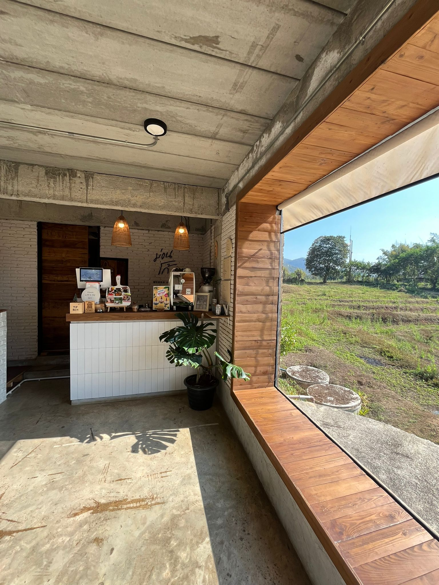Monko Cafe, Pai merkezin birazcık dışında, tarlalar ve dağlarla çevrili sakin bir bölgede yer alan minimalist bir kafe ve gerçekten huzur arayanlar için biçilmiş kaftan. Kahveleri şahane, yanında tatlılar ve küçük atıştırmalıklar bulunuyor. Yerel bira seçenekleri de var.
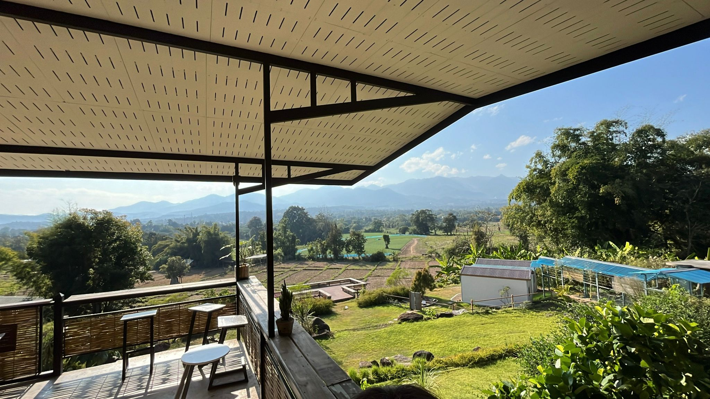Biz neredeyse her sabah kahvaltımızı yaptıktan sonra kendimizi burada bulduk; o sessiz ortam, dağ
manzarası ve kuş–horoz sesleri eşliğinde bütün kötü enerjiniz resmen akıp gidiyor.
Hatta bir gün oturmuş
keyif yaparken kasaba tarafından hafif bir müzik sesi duyduk; “Kesin bir yerde parti var!” deyip
sesi takip ettik ve kendimizi küçük, samimi bir partinin içinde bulduk. Pai tam olarak böyle bir
yer işte, sürprizlerle dolu.
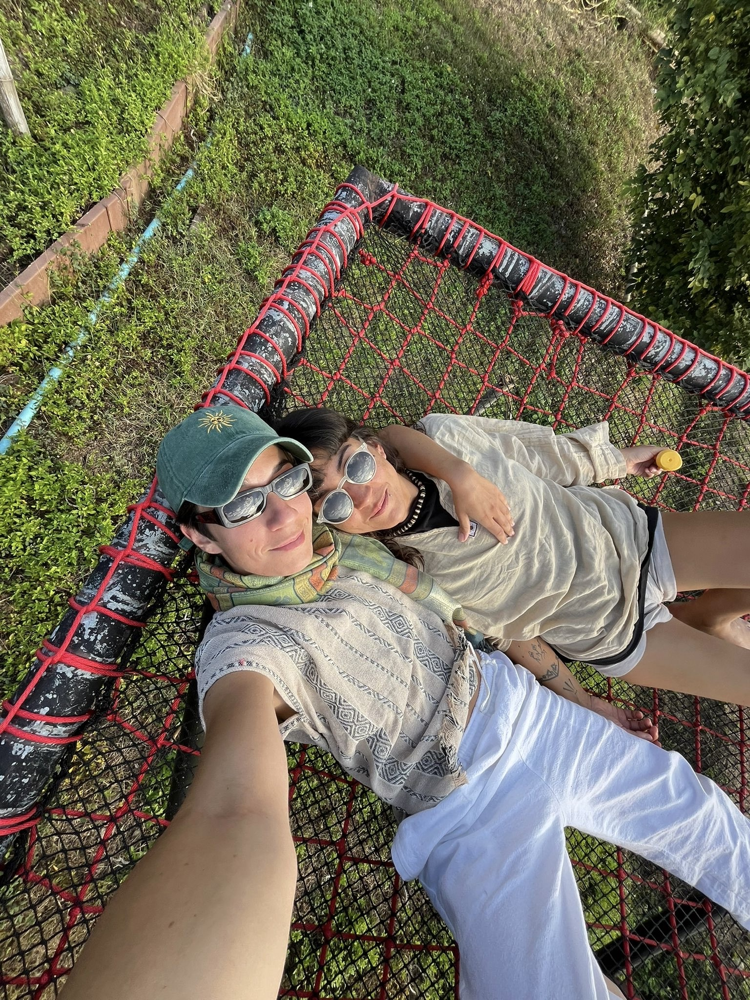
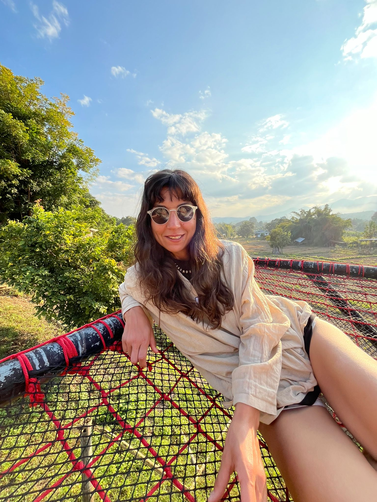
Bir de şu kalın ve sağlam filelerden yapılmış oturma alanları var ki… bayıldık!
Güneş batmaya yakın o
filelerin üzerine uzanıp manzaraya dalmak öyle güzel ki saatler nasıl geçiyor anlamıyorsunuz.
Minimalist atmosferi, harika manzarası ve huzur dolu ortamıyla Monko, Pai’de gönlümüzü çalan
yerlerden biri oldu.
Fiyatlar hiç abartılı değil. Çarşamba günleri hariç 10.00-19.00
saatleri arasında her gün açık.
2. Dream Cafe Pai
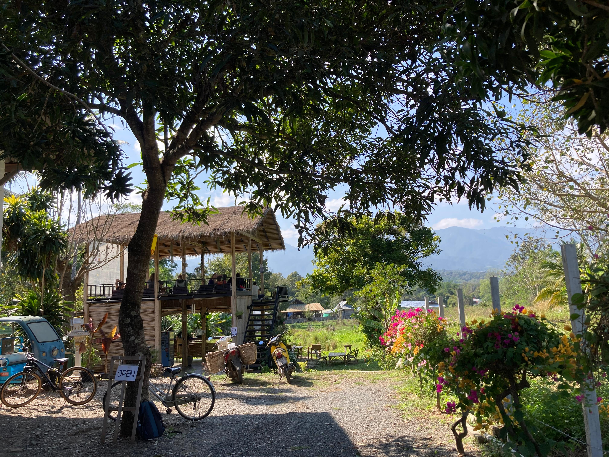Yine doğanın içinde tarlaların arasında dağ manzarasıyla adeta bir kartpostal gibi bambaşka bir yer.
Dream Cafe.
Burası, Pai’nin sakinliğini hissetmek, kahvenizi yudumlarken nefes almak ve biraz da kendinize zaman
ayırmak için şirin mi şirin bir yer. Bahçedeki ve üst kattaki hamaklar ve armut koltuklar sayesinde,
kahvenizi alıp uzanarak manzarayı izlemek gerçekten inanılmaz keyifli oluyor.
Buradaki kahvaltı bizim isteğimizi karşılıyordu: kendi yaptıkları buğday ekmeğinin üzerine bol
avokado ve
çırpılmış yumurta, yanında da harika soslu yeşil salata… Hem hafif hem de tam istediğimiz gibi
doyurucuydu.
Arkadaşlar yeri gelmişken söyleyeyim Tayland'da peynir ve zeytin seçenekleri çok çok az. Neredeyse
yok. Bir ara martininin içinde zeytin geldi diye çok mutlu olduğumuzu hatırlıyorum.
Bu da böyle aklınızın bir köşesinde bulunsun😀
Ayrıca üst katta yoga seansları, mandala boyama günleri ve
çeşitli atölyeler de düzenleniyor. Sessiz
atmosferi, tatlı çalışanları, hamakları ve bu minik etkinlikleriyle Dream Cafe, Pai’de mutlaka
uğranması gereken bir adres.
Fiyatlar oldukça makul ve kafe genellikle haftanın her günü 10:00–19:00 saatleri
arasında açık.
Ufak bir not: Bazı günler etkinlik varsa ve başlamışsa kafeye giriş
yapılamayabiliyor, bunu göz önünde bulundurmakta fayda var.
3. Cafe De Pai
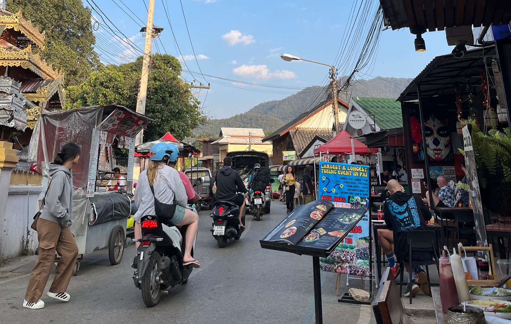Cafe de Pai, Pai kasabasının ana caddesinde yer alan, hem yerli halkın hem de gezginlerin sıkça uğradığı sevilen bir kafe. Menüde Tay ve Avrupa mutfağından seçenekler bulunuyor. Kahvaltı, brunch ve akşam yemeği için gayet uygun bir ortam sunuyor; kahvaltı tabakları gerçekten dolu dolu ve lezzetli, tabaklar oldukça özenli hazırlanıyor ve yedikleriniz gerçekten keyif verici.
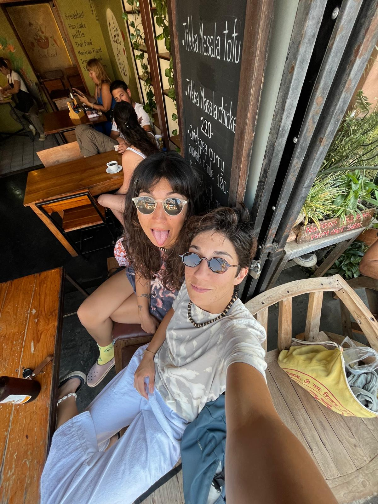Sadece servis biraz yavaş olabiliyor, ama yemek ve içeceklerinizi beklerken caddenin canlı
atmosferini izlemek gerçekten eğlenceli.
Cafe de Pai genellikle haftanın her günü 08:00–22:00 saatleri arasında açık. Bazen
kapalı
olabiliyor, ama sorun değil; gittiğinizde kapalıysa hemen başka bir yere geçebilirsiniz, çünkü
Pai’nin olayı tam da bu arkadaşlar!
Pai'de Konaklama Deneyimi
Baan Mai Kon Muang Pai Resort
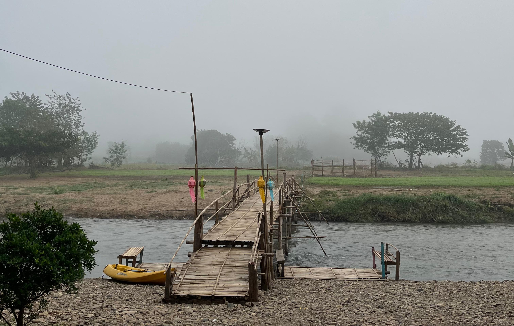Baan Mai Kon Muang, Pai kasabasının merkezine oldukça yakın, gece pazarına yürüyüş
mesafesinde ve Pai
Nehri kenarında yer alıyor. Anlayacağınız, hem kolay ulaşım hem de huzurlu bir
ortam sunuyor. Doğanın içinde olmayı seven biz, buraya gerçekten bayıldık.
İlk geldiğimizde Pai için sadece 4 günlük bir plan yapmıştık, fakat hem konakladığımız bu yere hem
de Pai kasabasına öyle hayran kaldık ki tatilimizi 4 gün daha uzattık. Sabah erken saatlerde, sisli
bir doğa manzarasıyla uyanmak gerçekten muhteşem.
Ortak açık alanda kurulan açık büfesi sabahları yaklaşık bir saate kadar hizmet veriyor; ufak atıştırmalıklar ve çay-kahve bulmak mümkün. Sıcak su, banyo ve oda servisi gibi temel ihtiyaçlar sorunsuz bir şekilde sunuluyor.
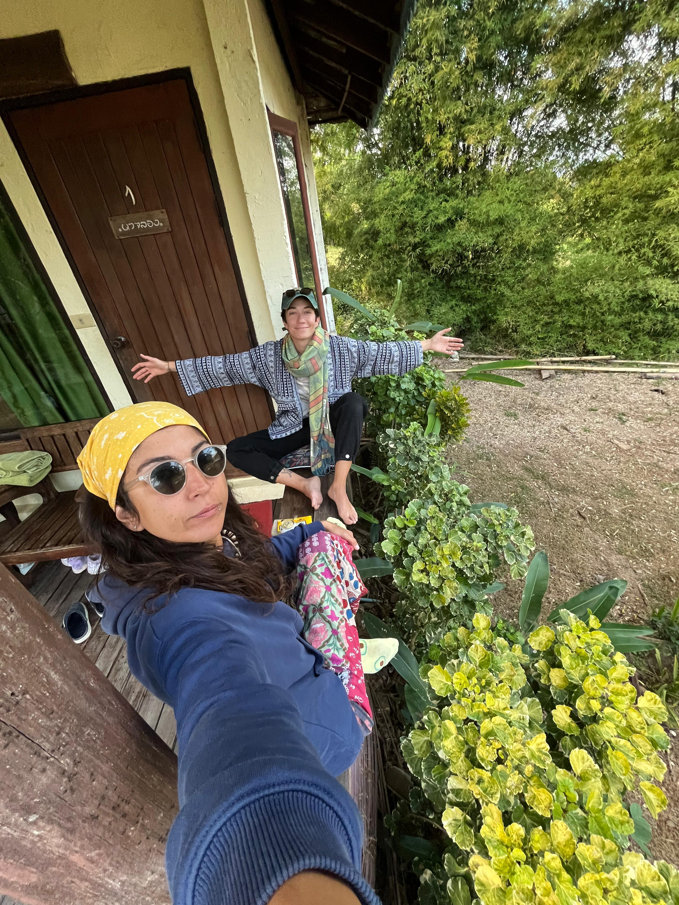Odaların önündeki veranda ise saatlerce oturup keyif
yapmak ve kafa dinlemek için harika bir alan.
Biz Ocak ayının ilk haftalarında buradaydık ve geceliğine yaklaşık 1.500 TL = 1.500
THB ödedik. Baan Mai Kon Muang,
Pai’de hem doğayla iç içe hem de kasaba hayatına yakın konaklamak isteyenler için kesinlikle tavsiye
edeceğimiz
bir seçenek.
Keşfet, Hisset, Bırak Akışına: Pai
Pai, kuzey Tayland’ın dağları arasında saklanmış, huzuru, yaratıcılığı ve bohem
ruhuyla ülkenin en
özel kasabalarından biri. Burası sadece sakinlik sunmuyor; sisli sabahları, yemyeşil doğası, doğal
havuzları ve her köşeden yükselen müzik sesleriyle adeta içinizi besleyen bir atmosfere
sahip. Kasabada insanlar öyle özgür ve rahat ki… Pek çoğu çıplak ayakla dolaşıyor ve sokaklar o
kadar temiz ki insanın buna gerçekten içi gidiyor. Pai’nin bu rahatlığı insana çok iyi
geliyor.
Pai’yi diğer yerlerden ayıran en güzel şeylerden biri ise her türden gezgine hitap etmesi.
Yalnız
seyahat edenler, çiftler ve çocuklu aileler için
inanılmaz uygun. Hatta öyle ki, Tayland’ın hiçbir
yerinde burada gördüğümüz kadar çok çocuklu aile görmedik. İnsanlarla sohbet ettiğimizde, bazı
ailelerin çocuklarını burada büyütmek için geçici olarak Pai’ye yerleştiğini bile
öğrendik.
Kasabanın yavaş temposu, güvenli ortamı ve doğayla iç içe yaşam tarzı, aileler için adeta bir
cennete dönüşmüş.
Pai’de ayrıca her gün bir etkinlik varmış gibi hissediyorsunuz. Kafelerin önlerinde yoga dersleri,
mandala boyama atölyeleri, açık mikrofon geceleri, canlı müzik, parti gibi aktivitelerin broşürlerini
görüyorsunuz. Ne yapmak istediğinize o gün karar verip kolayca katılabiliyorsunuz. Tam bir özgür
ruh ortamı.
Peki, senin Pai’de en sevdiğin yer hangisi ve neden?
Aşağıya yorum bırak, mutlaka duymak isteriz!
Yorum Yaz
E-posta adresiniz yayımlanmayacaktır. Gerekli alanlar * ile işaretlenmiştir.